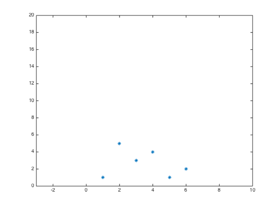
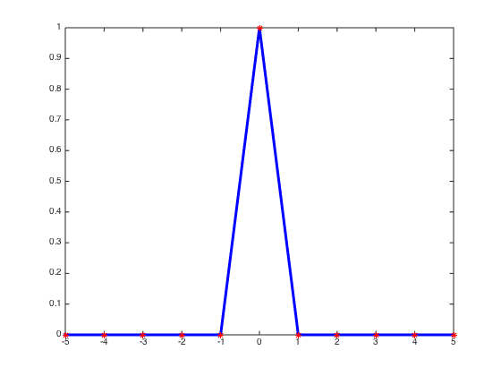

Contents
Illustration of interpolation in 1D
Here is a discrete 1D signal
addpath('imageanalysistools'); w = [1 5 3 4 1 2]; i = 1:6; figure(1); plot(i,w,'*'); axis([-3 10 0 20]);
The interpolation expression is W(x) = \sum_i w(i) h(x-i)
Here h(x) is a small 'bump' that is scaled with w(i) and moved to position i. Let's illustrate this with a wierd interpolation function h(x)
x = -5:0.05:5; hx = h2(x); figure(2); clf plot(x,hx,'b','LineWidth',3); hold on ii = -5:5; deltaii = zeros(size(ii)); deltaii(6)=1; plot(ii,deltaii,'r*');
interpfun = 'h2'; xx = -2:0.01:9; W = myinterpolate1d(w,xx,interpfun); Ws{1,1} = W; x = -5:0.05:5; hx = feval(interpfun,x); figure(3); clf; subplot(1,2,1); plot(x,hx,'b','LineWidth',3); axis([-3 3 0 5]); hold on plot(ii,deltaii,'r*'); subplot(1,2,2); plot(i,w,'*'); axis([-3 10 0 20]); hold on plot(xx,W,'b-');
Undefined function 'myinterpolate1d' for input arguments of type 'double'. Error in interpolation1d (line 36) W = myinterpolate1d(w,xx,interpfun);
interpfun = 'h1'; xx = -2:0.01:9; W = myinterpolate1d(w,xx,interpfun); Ws{1,2} = W; x = -5:0.05:5; hx = feval(interpfun,x); figure(4); clf; subplot(1,2,1); plot(x,hx,'b','LineWidth',3); axis([-3 3 0 5]); hold on plot(ii,deltaii,'r*'); subplot(1,2,2); plot(i,w,'*'); axis([-3 10 0 20]); hold on plot(xx,W,'b-'); sum(hx/20)
interpfun = 'sinc'; xx = -2:0.01:9; W = myinterpolate1d(w,xx,interpfun); Ws{1,3} = W; x = -5:0.05:5; hx = feval(interpfun,x); figure(5); clf; subplot(1,2,1); plot(x,hx,'b','LineWidth',3); axis([-3 3 0 5]); hold on plot(ii,deltaii,'r*'); subplot(1,2,2); plot(i,w,'*'); axis([-3 10 0 20]); hold on plot(xx,W,'b-');
What happens after smoothing
mycolors = {'r','g','b'}
for aa = 0.1:0.1:2;
xxx = -10:0.01:10;
ggg = 1/sqrt(2*pi*aa^2)*exp( - xxx.^2/(2*aa^2) );
figure(6);
clf;
subplot(1,2,1);
for kk = 1:3;
plot(x,hx,'b','LineWidth',3);
hold on
end
axis([-3 3 0 5]);
plot(ii,deltaii,'r*');
subplot(1,2,2);
plot(i,w,'*');
axis([-3 10 0 20]);
hold on
for kk = 1:3;
plot(xx,conv2(Ws{kk},ggg,'same')/100,mycolors{kk},'LineWidth',3);
hold on
end
title(num2str(aa));
end